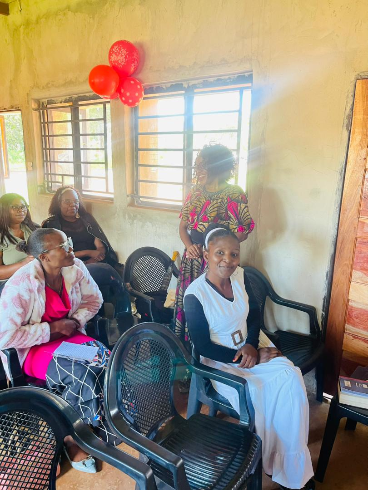
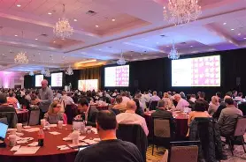

A church devoted to the faithful preaching of Christ, the teaching of Scripture, and the proclamation of the Gospel.
Learn More
We are a Baptist Church founded on the Holy Scripture as expressed in the 1689 Baptist Confession of Faith.
Guided by the conviction of 1 Corinthians 2:2, we are committed to proclaiming Christ crucified and equipping believers through sound biblical teaching.
Read Our Statement of FaithAll the Church's efforts in carrying out the great commission are organised into departments called ministries. Each ministry is under the oversight of the Elders of the Church.
Equipping young people with biblical truth, discipleship, and spiritual guidance to stand firm in Christ in today’s world.
Strengthening men to lead in faith, integrity, and service according to the example of Christ and the teaching of Scripture.
Promoting fellowship among women in order to guide them in godliness, biblical wisdom, Christian living, and service in the church.
Teaching children the Word of God in a safe, loving environment, laying a strong foundation of faith in Christ from an early age.
Marriage focused ministry to edify families in the Church.
09:00 AM - 12:00 PM , 17:00 PM - 18:00 PM
06:00 PM - 07:00 PM
06:00 AM - 07:00 AM
Watch inspiring messages and teachings.

Learn how faith can help you overcome every challenge in life while growing in the knowledge and grace of our Lord Jesus Christ.

A biblical examination of doctrinal innovations and the dangers they pose to the purity and faithfulness of the church.

A biblical exhortation to guard our hearts against idolatry and remain faithful to God in our worship, devotion, and daily living.
Stay connected with church activities and conferences.

Join us for worship, teachings, networking, and spiritual growth.
03-06 July 2026 | Zambia Baptist Association Headquarters, Ndola.Jide and Victoria Owolabi of the Metropolitan Tabernacle (Met Tab) London will be visiting Zambia with Daniel, their son, this year. Mr. Jide Owolabi is a member of the pastoral staff at the Met Tab. He serves as a Pastoral assistant to Dr. Peter Masters, the pastor of the Met Tab. He will be the main speaker at the Sentinel Evangelistic Youth Conference in December 2026
05 December 2026 | Sentinel Baptist Church, Kalumbila.Pastor Ben M. Sangende has faithfully served as pastor of Sentinel Baptist Church since 2018. He is a husband of one wife and father of three girls.
“For I determined not to know anything among you, except Jesus Christ, and Him crucified.”
1 Corinthians 2:2
Sentinel Baptist Church exists to proclaim Jesus Christ faithfully through biblical preaching and teaching. Our desire is to see lives transformed by the truth of God’s Word and believers strengthened in sound doctrine and faithful Christian living.
Read Our Statement of FaithWe'd love to hear from you.